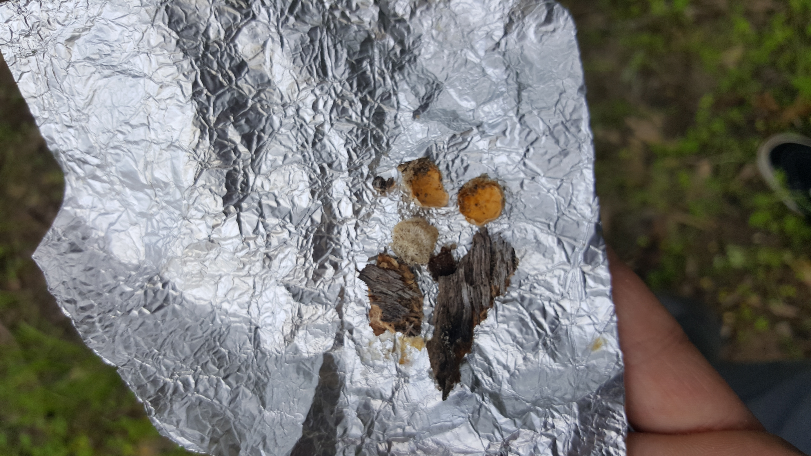
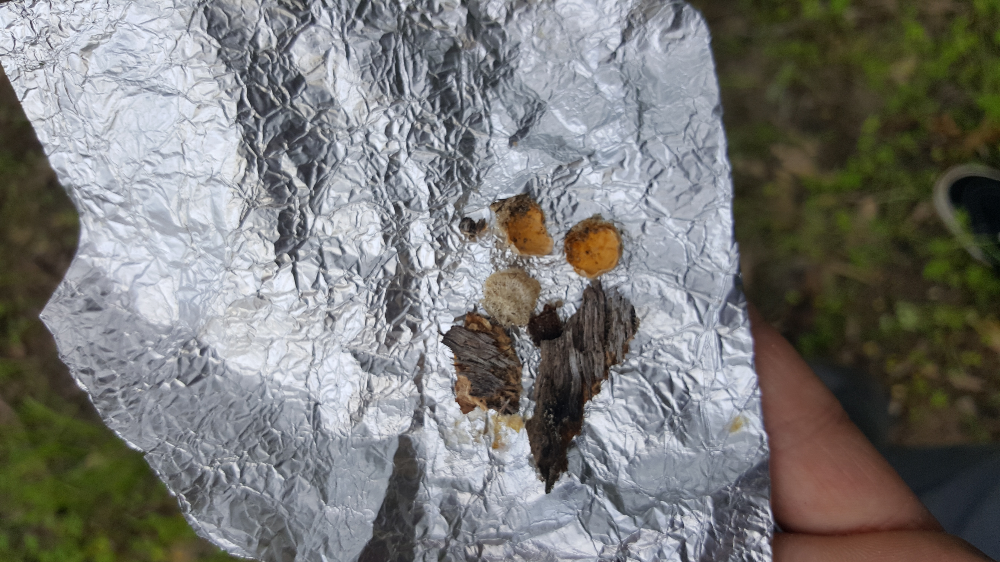
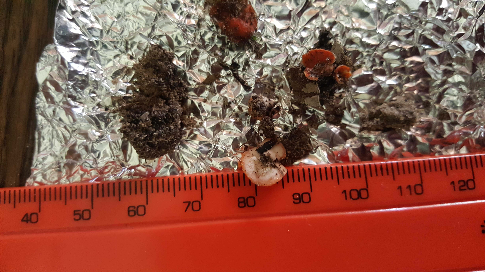
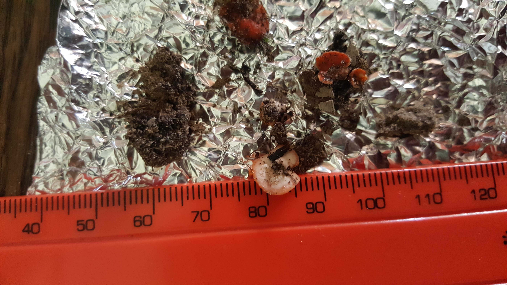

I thought would go straight back to where I last left off.


I thought would go straight back to where I last left off.
It turned out to be a wise choice. Identification?
Keeping my eye on the ground I spotted this fallen piece of bark half buried in the soil. Identification?


 


I hope these holes were made by moles😓.


The diameter of this hole in the side of the ridge is about twice that of the previous holes😱. I just wish I got a better photo of the entrance.


Another beatiful shelf fungus. Identification?


At first I thought this could be an Aminita species about to open up, but given what I found a couple of weeks later I now think this was rather a Scleroderma(Earthstar) bud before opening.


I think this fallen tree was an Acacia, but I'm not sure.'


A triving patch of liverworts.


This liverwort is quite common in the area, but this was the only patch that I found that had reproductive bodies. This is possibly Lophocolea heterophylla.


Some more Laccaria laccata.


Peering through the trees my eye caught sight of a stump with some greenish growth. My inital thought(hope) was that it could be Chlorociboria aeruginascens. Closer inspection revealed that to be wrong. It turned out to be a member of the Cladonia genus.


Even an oil drum is a suitable substrate.

A lonesome Massonia.

And everywhere vibrant green carpets of bryophytes. Judging by the rate of residential "development" occuring in the area to satiate the fantasies of people fleeing disintegrating local government looking to live their dreams in the Western Cape; soon to be replaced by fugly flats.


While taking the pictures of the moss and watching my step I spotted These inconspicuous Melastiza growing between the leaf litter.


 

Even more moss😍.

Done for the day.